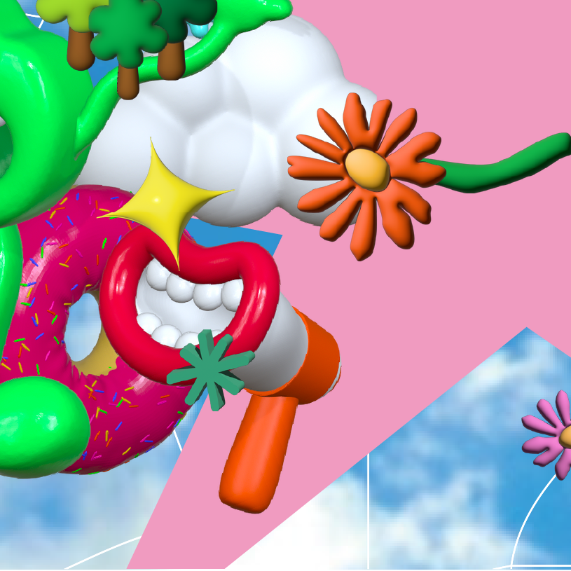
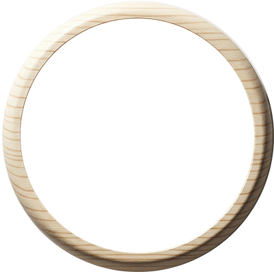

尋找綠色寶寶夥伴



夥伴蹤跡：0 / 4 位
喚醒微笑之心


信賴點數：0 / 500
一一找回失散的夥伴，並用您的支持為「微笑之心」注入能量！
請使用手機相機掃描店家現場的 QR Code 來參與活動。
夥伴蹤跡：0 / 4 位
信賴點數：0 / 500
最終目標：
當「四位綠色寶寶夥伴」全部找到，並且透過消費MIT商品來讓「微笑之心」的信賴點數，當信賴點數累積滿 500 時，您就達成了最終目標！
兌換獎品：
達成目標後，您將有資格兌換我們為您準備的活動紀念獎。
如何兌換：
當您在網頁上看到產生專屬QR CODE按鈕後，即可點擊按鈕產生專屬兌換碼，並親至「大會服務台」，向工作人員出示您手機上的 QR Code 畫面，核對無誤後即可兌換。
※ 請注意：每日獎品數量有限，兌完為止，敬請把握！